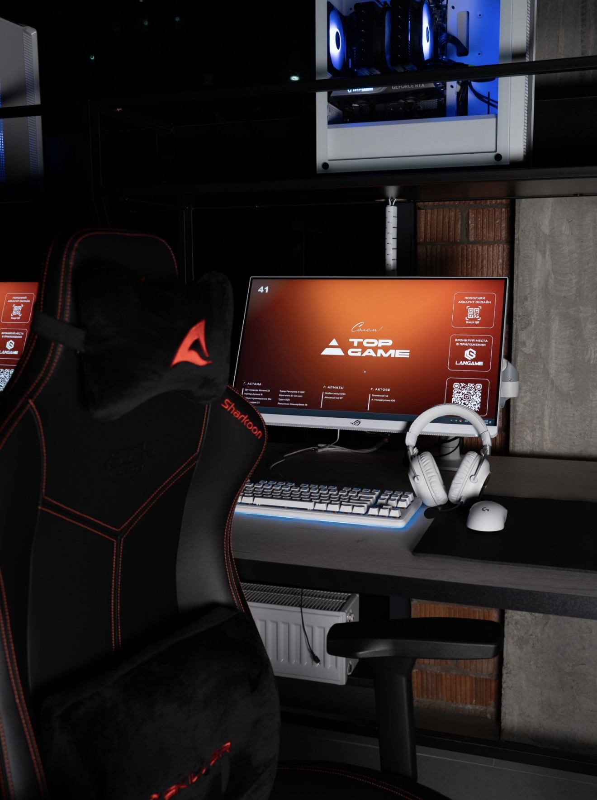

Основные этапы
- Создать структуру каждого HTML-документа.
- Добавить семантические элементы и навигацию.
- Заполнить страницы реальной информацией о клубе.
- Добавить собственные фотографии в папку изображений.
- Проверить ссылки и HTML-разметку.

ЗабронироватьО создании сайта
Эта страница рассказывает о процессе разработки учебного сайта компьютерного клуба TOP GAME. Проект состоит из шести связанных HTML-страниц. На них представлена информация о клубе, игровых компьютерах, ценах и бронировании. Все страницы открываются локально в браузере и связаны относительными ссылками.

Перейти к процессу разработки
Посмотреть распределение страниц
Сначала была определена структура проекта, после чего в одной
папке были созданы HTML-файлы и каталог images.
Код редактировался в IntelliJ IDEA, а результат проверялся
в браузере. Для сохранения файла использовалось сочетание
клавиш Ctrl + S, а для обновления страницы
в браузере — Ctrl + R.
Следующий пример показывает семантический элемент
section, применённый в проекте:
<section>
<h2>Адрес и контакты</h2>
<p>Клуб работает круглосуточно.</p>
</section>Результат проверки: Document checking completed. No errors found.
| Файл | Содержание | Автор |
|---|---|---|
| index.html | Главная страница клуба | Ulan |
| prices.html | Цены и игровые тарифы | Ulan |
| computers.html | Информация об игровых компьютерах | Ulan |
| booking.html | Форма бронирования игрового места | Ali |
| about.html | Информация о клубе и контакты | Ali |
| colophon.html | Описание процесса разработки сайта | Ali |
Для проверки разметки применяется официальный валидатор W3C. Сайт должен пройти проверку без ошибок.
В текущей версии не используются CSS, JavaScript, фреймворки & шаблоны. Внешнее оформление будет добавлено на следующем этапе разработки.